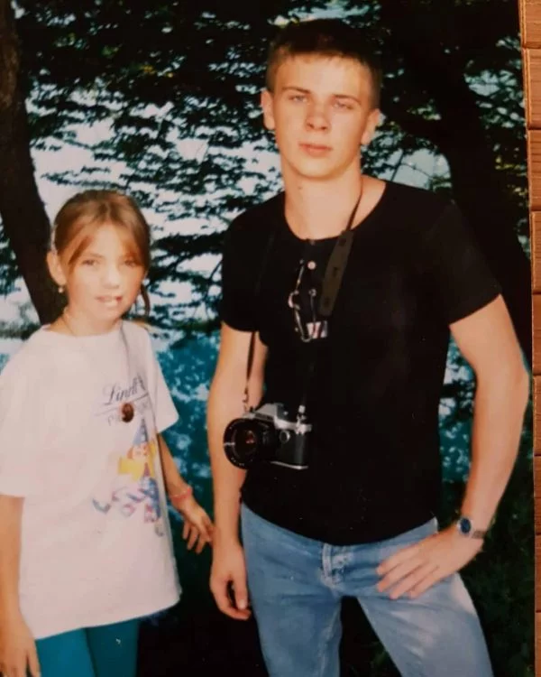
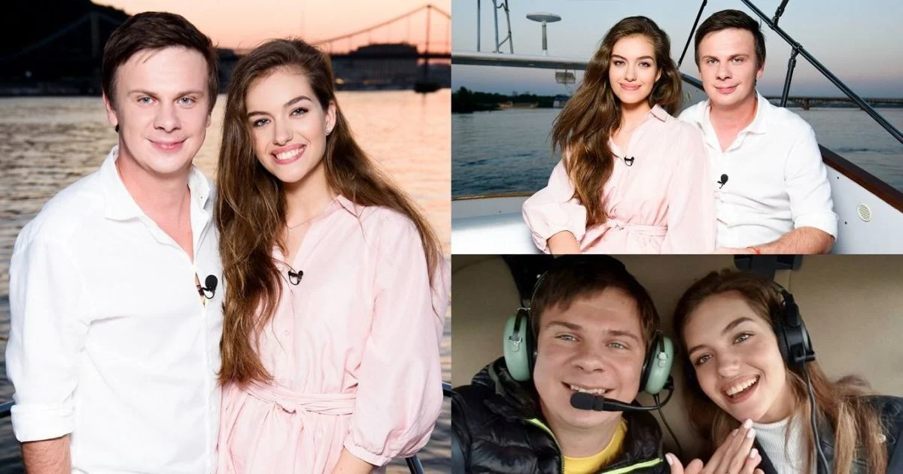

Життєпис
Дмитро народився 17 червня 1983 року в Києві. Батьки — Костянтин та Ніна Комарови. Був першою дитиною в сім'ї. У нього є молодші брат та сестра — двійнята Микола та Ангеліна, яких назвали на честь бабусі та діда.
Після закінчення середньої загальноосвітньої школи продовжив навчання в університеті, здобувши дипломи інженера та фахівця зі зв'язків із громадськістю. Про кар'єру журналіста він мріяв ще у юнацтві, пишучи статті та нотатки для місцевих періодичних видань. У журналістику прийшов у ранньому віці: першу статтю опублікував в 12 років, а у 16 вже отримав першу роботу у тижневику «Теленеделя». Там займав посаду редактора колонки «Чоловік». Дмитро жартує, що отримав першу роботу раніше за паспорт.
У 17 років Комаров працював фотокореспондентом, знімав українських та світових зірок, які приїжджали на гастролі до Києва, а згодом продавав ексклюзивні фото різним виданням. Так його ім'я поступово почало з'являтися на сторінках популярних газет та журналів та завойовувати авторитет у журналістських колах.Ще студентом Дмитро захоплювався подорожами, обираючи при цьому маловідомі маршрути і непопулярні напрямки. У таких поїздках він знайомився з місцевим населенням та самобутньою культурою різних країн. Після повернення до України Комаров продавав фоторепортажі з екзотичних країн різним виданням, робив фотовиставки і таким чином оплачував нові подорожі.
Ідею нового проєкту Комаров пропонував багатьом телеканалам, але отримував відмову, доки не познайомився з генеральним директором телеканалу «Сіті» та одним із продюсерів телеканалу «1+1». Вони запропонували зробити пілотний випуск самостійно та показати результат. Перший сезон програми «Світу навиворіт» Комаров випустив за власний кошт. Сезон був присвячений Камбоджі та налічував 8 випусків. Перший ефір проєкту «Світ навиворіт» вийшов 11 грудня 2010 року на телеканалі «1+1». Станом на вересень 2023 року вийшло 14 сезонів програми. Відтоді свою діяльність Комаров продовжив у рамках власного телепроєкту. Відвідуючи екзотичні країни, він проводить журналістські розслідування, робить спеціальні репортажі з місць масштабних катастроф, всесвітньо відомих фестивалів, а також бере ексклюзивні інтерв'ю. Часто репортажі Комарова є унікальними або такими, що змогли повторити лише деякі журналісти у світі.
Особисте життя
Батьки — Костянтин та Ніна Комарови. Був першою дитиною в сім'ї. У нього є молодші брат та сестра — двійнята Микола та Ангеліна, яких назвали на честь бабусі та діда. Брат Микола займається створенням комп'ютерних ігор, а сестра Ангеліна — стилістка-перукарка. У травні 2019 року одружився з журналісткою та моделлю Олександрою Кучеренко[20][21]. Вінчання відбулося у православному храмі Єрусалима, медовий місяць молодята провели на Мальдівах. У 2025 році пара розлучилася. 14 березня 2025 року Дмитро Комаров офіційно підтвердив, що розлучається з дружиною Олександрою Кучеренко. Одне з хобі — лижний спорт. Займається ним зі студентських років
Телепроєкти
- 2010 — дотепер — «Світ навиворіт» (автор і ведучий).
- 2016 —"Київ Вечірній" (запрошена зірка)
- 2017 —«Танці з зірками» (учасник в парі з Олександрою Кучеренко)
- 2017 —«Ліга Сміху» (запрошена зірка)
- 2020 — «Хто зверху?» (запрошена зірка).
- 2021 — дотепер — «Мандруй Україною з Дмитром Комаровим» (автор, ведучий)
- 2023 — «Рік» (автор, ведучий).
- 2023 — «Рік. За кадром» (автор, ведучий).
- 2023 — «Рік. Харківщина» (автор, ведучий)
- 2023 — «Рік. Херсон» (автор, ведучий).
Цікаві факти
- У всі подорожі Дмитро Комаров бере із собою талісман — український прапор.
- У подорожах використовує рюкзак української фірми.
- У В'єтнамі чаклун племені зао навсправжки намагався одружити свою дочку з Дмитром Комаровим. Єдина його умова — журналіст назавжди оселиться в племені або хоча б в Ханої
- «Світ навиворіт» був визнаний телепроєктом року за версією газети «Известия в Украине»
- В одному з випусків про мандрівку Японією Дмитро взяв участь у зйомках кліпу популярного жіночого гурту Idol College в ролі журналіста і фаната.
- Закінчив 6 класів музичної школи за класом фортепіано.
- Після експедиції до Китаю став фанатом чаю пуер.
- Вміє пілотувати літак малої авіації.
- Улюблена страва — тайський суп том ям. Дмитро Комаров вміє та любить готувати його самостійно.